Kernel Density Estimation
Fast & Accurate Approximate KDE?
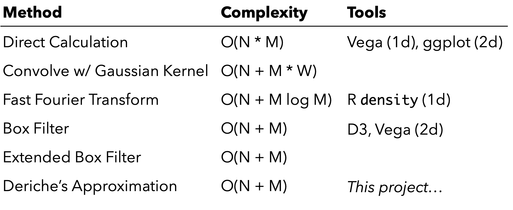
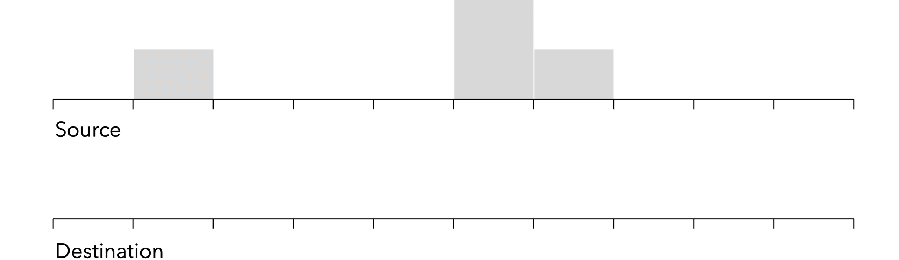
Box Filter
Approximate Gaussian filter via iterated uniform filters
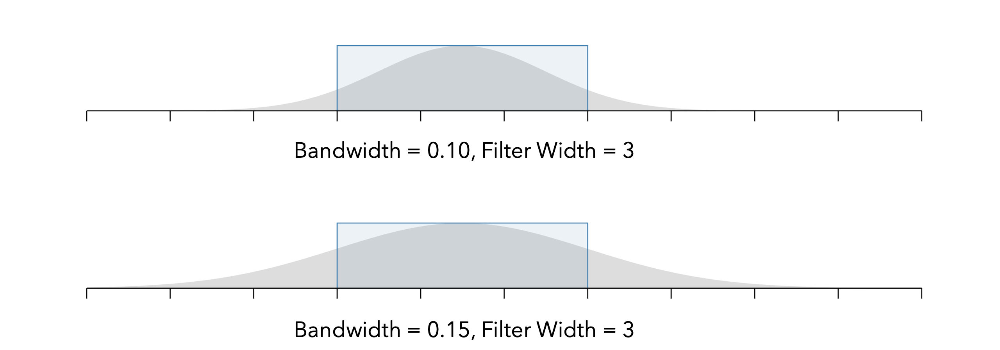
Box Filter Quantization Error
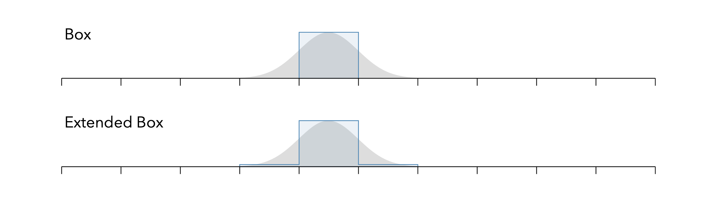
Extended Box Filter
Gwosdek et al. ‘11
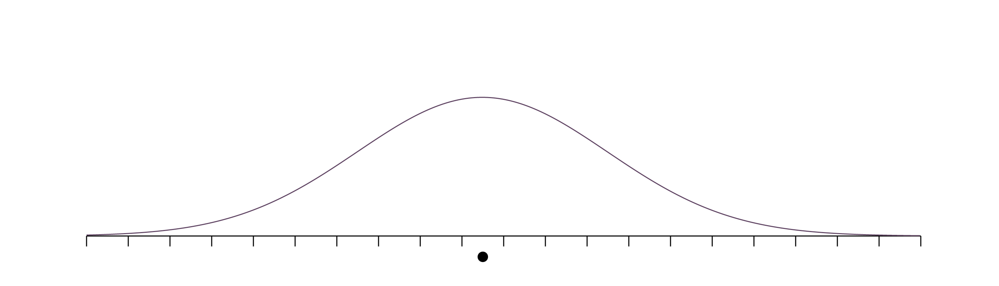
Deriche's Approximation
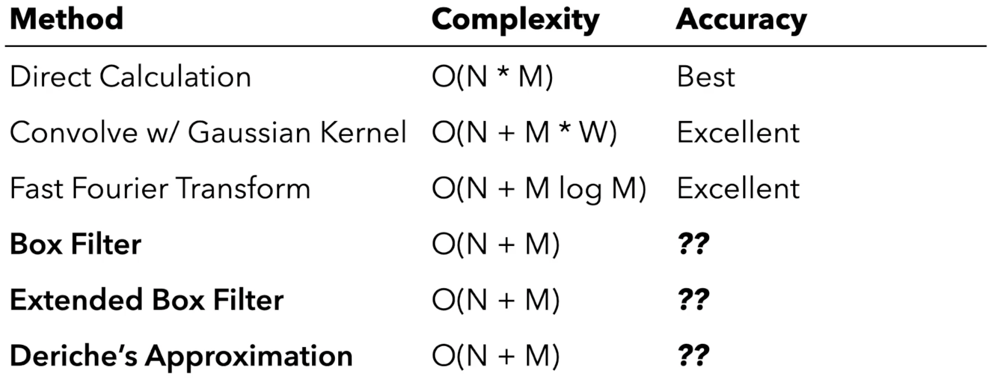
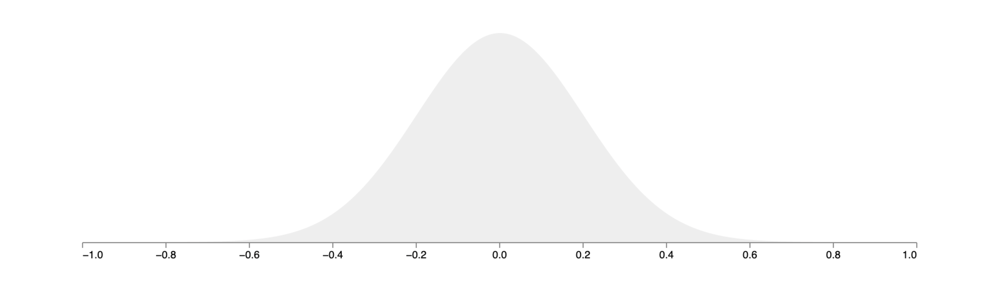
Impulse Test
Measuring Error
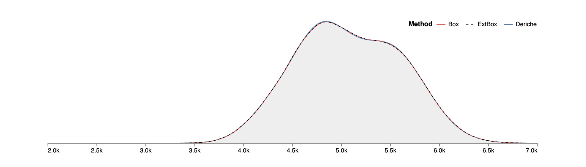
Palmer Penguins
Error - Simple binning, 256 bins
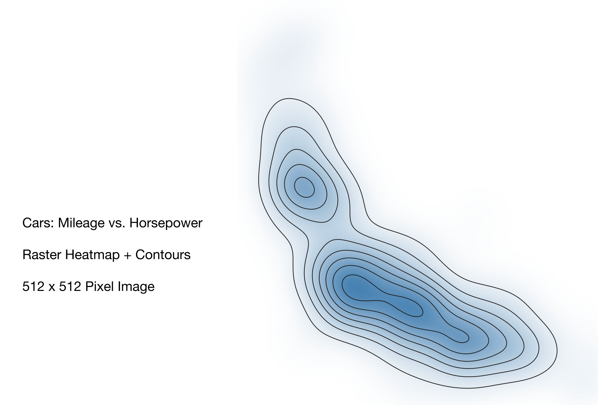
2D Density Estimation
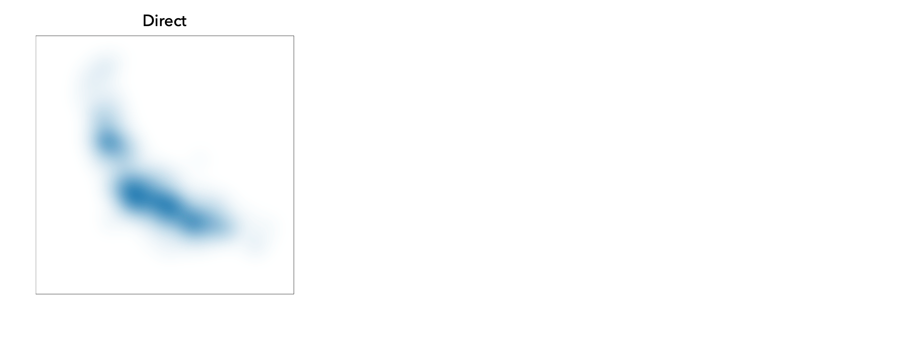
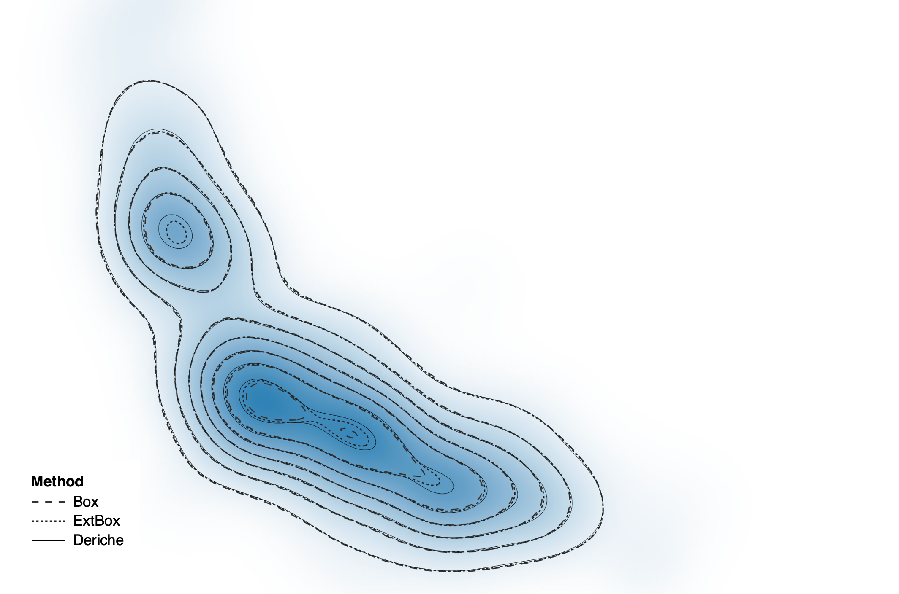
Error - Simple binning, 256 x 256 bins
Fast & Accurate Gaussian Kernel Density Estimation
By: Jeffrey Heer
1 / 0